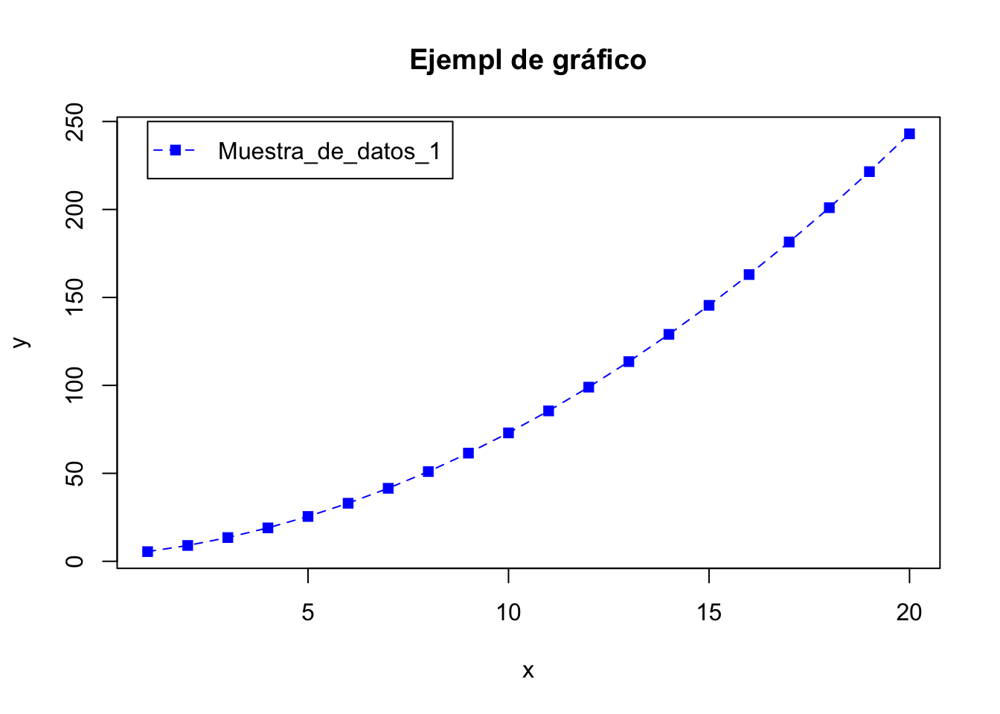
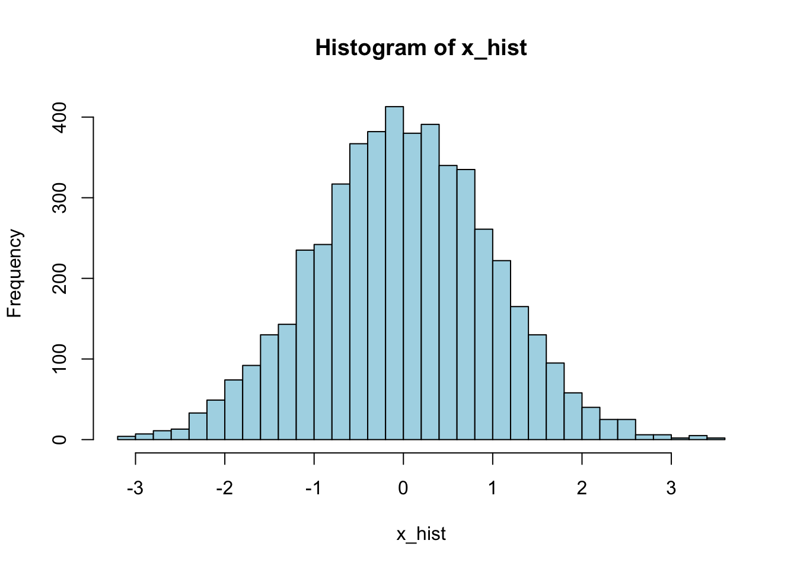
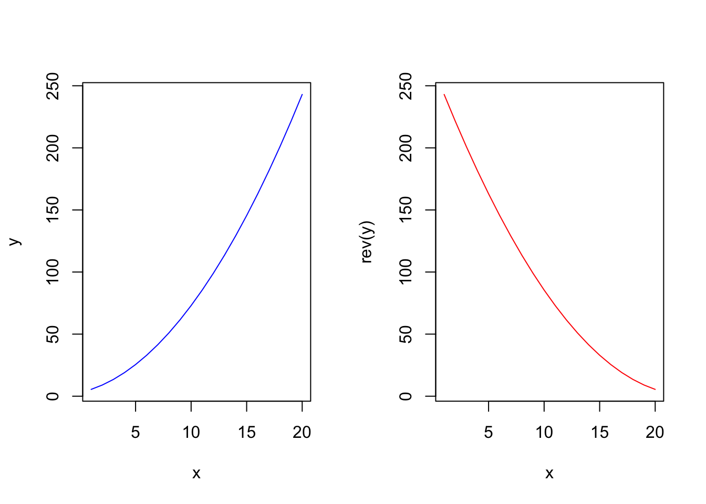
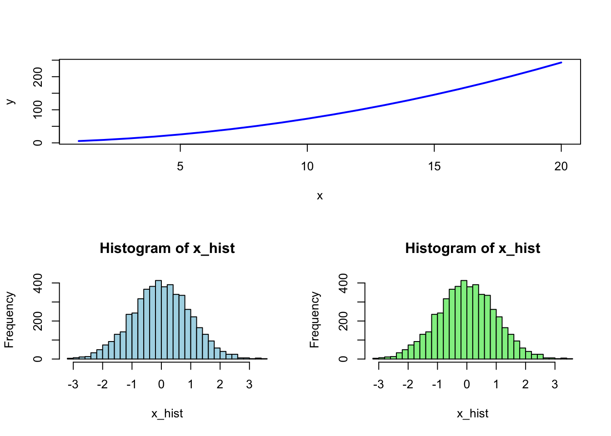
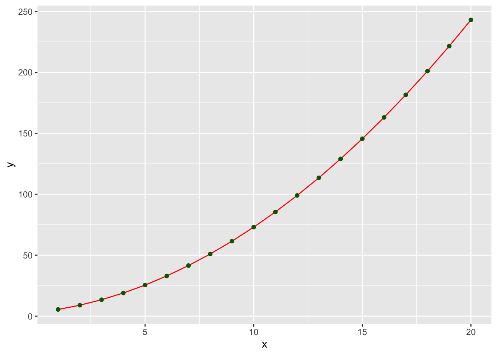
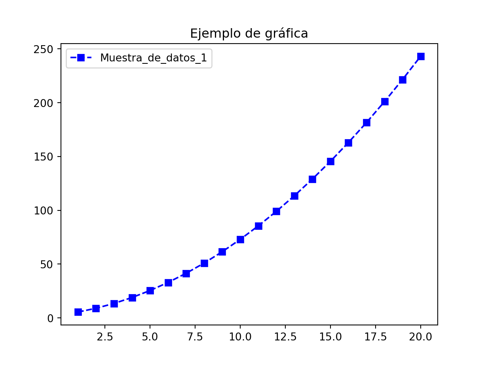
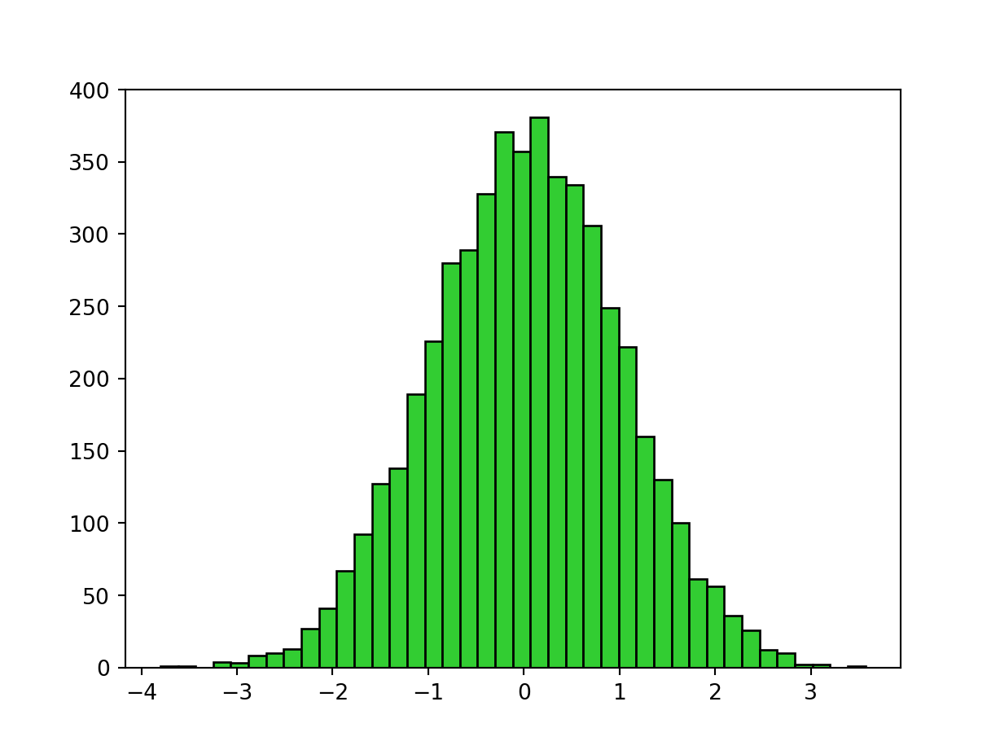
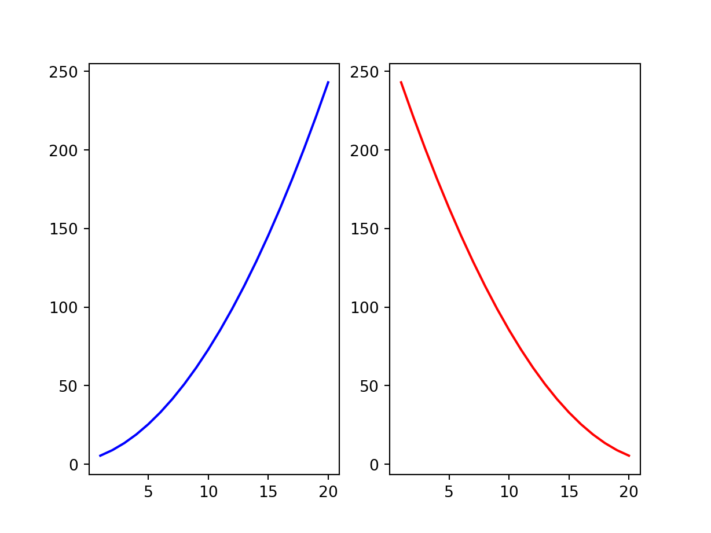

R versus Python: Comparación de lenguajes
A continuación se presentan algunos ejemplos de código equivalente en R y Python para facilitar la comparación entre ambos lenguajes. No se trata de una comparación exhaustiva y cualquier operación adicional que pueda ser necesaria en uno u otro lenguaje se cubrirá en su aplicación econométrica coorespondiente.
Código R
# Ayuda
?print #help(print)
#
# Matrices de datos (data arrays)
#
# Crear un vector:
my_vec <- c(1, 2, 3, 4, 5, 6, 7, 8)
str(my_vec) num [1:8] 1 2 3 4 5 6 7 8# Seleccionar los datos de un vector (en R los valores comienzan en el índice 1)
print(my_vec[1])[1] 1# Rango de valores: en R el índice rango es 1:3 = {1, 2, 3}
print(my_vec[1:3])[1] 1 2 3print(my_vec[c(1, 2, 4, 8)])[1] 1 2 4 8my_range <- seq(from = 1, to = 4, by = 1)
print(my_range)[1] 1 2 3 4print(my_range[1:4])[1] 1 2 3 4# Longitud de la matriz de datos
print(length(my_vec))[1] 8# Bucles (loops)
for(i in 1:length(my_vec)){
print(my_vec[i])}[1] 1
[1] 2
[1] 3
[1] 4
[1] 5
[1] 6
[1] 7
[1] 8# Seleccionar cada tercer elemento, empezando desde el segundo
print(my_vec[seq(2, length(my_vec), 3)])[1] 2 5 8# o cada segundo elemento partiendo desde el primero
print(my_vec[seq(1, length(my_vec), 2)])[1] 1 3 5 7# Suma de vectores
my_vec_1 = seq(from = 1, to = 5, by = 1)
my_vec_2 = rev(my_vec_1)
cat("vec. 1: ", my_vec_1)vec. 1: 1 2 3 4 5cat("vec. 2: ", my_vec_2)vec. 2: 5 4 3 2 1vec_sum = my_vec_1 + my_vec_2
cat("vec. 1 + 2: ", vec_sum)vec. 1 + 2: 6 6 6 6 6# Concatenación de vectores
cat("vec. 1 & 2: ", c(my_vec_1, my_vec_2))vec. 1 & 2: 1 2 3 4 5 5 4 3 2 1# Multiplicar los elementos de un vector por una constante
cat(my_vec_1 * 3)3 6 9 12 15# Concatenar un vector varias veces
cat(rep(my_vec_1, 3))1 2 3 4 5 1 2 3 4 5 1 2 3 4 5#
# Cadenas de caracteres
#
# Funciones específicas de R para modificar caracteres
my_animal = "bear"
print(my_animal)[1] "bear"print(toupper(my_animal))[1] "BEAR"my_sentence = paste("I", "saw", "a", my_animal)
print(my_sentence)[1] "I saw a bear"print(paste("----", "++++", sep = ""))[1] "----++++"#
# Variables que contienen diferentes tipos de información
# (valores enteros, de cadena, booleanos, etc.)
#
my_data <- list(name = "Joe",
grades = c(8, 7, 9),
has_attended = TRUE)
str(my_data)List of 3
$ name : chr "Joe"
$ grades : num [1:3] 8 7 9
$ has_attended: logi TRUEstr(my_data["name"])List of 1
$ name: chr "Joe"print(my_data["name"])$name
[1] "Joe"str(my_data[["name"]]) chr "Joe"print(my_data[["name"]])[1] "Joe"str(my_data["grades"])List of 1
$ grades: num [1:3] 8 7 9str(my_data["has_attended"])List of 1
$ has_attended: logi TRUEprint(my_data[["grades"]])[1] 8 7 9print(my_data$has_attended)[1] TRUE# A menudo tenemos más de una observación con diferentes propiedades.
# Por ejemplo, una base de datos de personas con nombres, identificaciones
# únicas, direcciones de correo electrónico, valor del indicador si es un
# nuevo miembro, etc. Y queremos tener una estructura tipo matriz (es decir,
# una tabla) para albergar esos valores.
my_dataset = data.frame(name = c("John", "Sam", "Tim"),
wage = c(800, 600, 700),
is_employed = c(TRUE, TRUE, FALSE),
stringsAsFactors = FALSE)
str(my_dataset)'data.frame': 3 obs. of 3 variables:
$ name : chr "John" "Sam" "Tim"
$ wage : num 800 600 700
$ is_employed: logi TRUE TRUE FALSE# Tener en cuenta que el stringsAsFactors es necesario para que la columna
# del nombre sea un vector de caracteres en lugar de un factor (un factor
# es un vector de valores enteros con un conjunto correspondiente de valores
# de caracteres para utilizar cuando se muestra el factor).
print(my_dataset) name wage is_employed
1 John 800 TRUE
2 Sam 600 TRUE
3 Tim 700 FALSEprint(my_dataset["name"]) name
1 John
2 Sam
3 Timprint(my_dataset$is_employed) [1] TRUE TRUE FALSE# Notar que el uso de $ devuelve un vector, mientras que la especificación
# de ["nombre"] devuelve un data.frame con una columna (como es evidente por
# el formato de salida).
#
# Definición de funciones
#
# Definir una función 1 (una funicón simple que compara dos valores)
my_compare <- function(x, y){
if(x < y){
print("1st value is smaller")
}else{
if(x > y){
print("1st value is greater")
}else{
print("Values are equal")
}
}
}
# Prueba de la función
my_compare(1, 1)[1] "Values are equal"my_compare(1, 2)[1] "1st value is smaller"my_compare(2, 1)[1] "1st value is greater"# Definir una función 2 (una función de suma personalizada, que incrementa
# los valores de dos elementos en uno antes de sumarlos)
my_sum <- function(x, y){
x <- x + 1
y <- y + 1
return(x + y)
}
# Prueba de la función
print(my_sum(1, 2))[1] 5# Definir una función 3 (resumen de una matriz de datos)
my_summary <- function(x){
min_val = min(x)
max_val = max(x)
sum_val = sum(x)
avg_val = mean(x)
output = list(min = min_val,
max = max_val,
average = avg_val,
sum = sum_val)
return(output)
}
# Prueba de la función
my_results = my_summary(c(-2, 1, 5))
print(my_results$min)[1] -2print(my_results[["average"]])[1] 1.333333print(str(my_results))List of 4
$ min : num -2
$ max : num 5
$ average: num 1.33
$ sum : num 4
NULLprint(my_results)$min
[1] -2
$max
[1] 5
$average
[1] 1.333333
$sum
[1] 4#
# Listas
#
my_list <- function(a_vec){
a_vec[1] <- "88"
append(a_vec, "!!!")
}
# Prueba de la función
old_vec <- c("a", "b")
cat("Old: ", old_vec, "\n")Old: a b new_vec <- my_list(old_vec)
cat("New: ", new_vec, "\n")New: 88 b !!! cat("Old: ", old_vec, "\n")Old: a b #
# Creación de matrices
#
# Crearemos una matriz 3X2 con elementos de 1 a 6 por columnas
x1 <- c(1, 2, 3)
x2 <- c(4, 5, 6)
x <- cbind(x1, x2) # los vectores se combinan como columnas en una matriz
print(x) x1 x2
[1,] 1 4
[2,] 2 5
[3,] 3 6# Podemos transponer una matriz usando t(...)
print(t(x)) [,1] [,2] [,3]
x1 1 2 3
x2 4 5 6# Podemos acceder a diferentes elementos de la matriz X
print(x[1, ]) # primera fila (para eliminar nombres, usar unname())x1 x2
1 4 print(x[, 1]) # primera columna[1] 1 2 3print(x[1, 1]) # elemento {1,1}x1
1 print(x[3, 2]) # elemento {3,2}x2
6 # Multiplicar matrices (X'X en este ejemplo)
print(t(x) %*% x) x1 x2
x1 14 32
x2 32 77#
## Clases en R
#
# Existen las llamadas clases S3, S4 y Reference en R, aunque su uso
# depende de cada creador de paquetes. Para algunos tutoriales sobre
# la creación de clases en R, ver esta página <http://adv-r.had.co.nz/OO-essentials.html> .
# Nos limitaremos a un ejemplo sencillo tanto para R como para Python:
# Una clase tendrá 3 variables: x, y y z;
# Otra clase tendrá una función para imprimir 'hola';
# La siguiente clase tendrá una función para duplicar el valor(es) de y;
# La última clase tendrá una función que incrementa el valor de la variable
# pasada en 1.
# En R, para definir una clase se usa setRefClass. El primer argumento es el
# nombre de la clase, y por convención debe ser el mismo que la variable a la
# que se asigna el resultado.
# También se tienen que pasar listas a los argumentos "fields" y "methods".
MyClass <- setRefClass(
"MyClass",
fields = list(
x = "ANY", #any kind of variable type
y = "numeric", #integer variable type
z = "character"#char variable type
),
methods = list(
initialize = function(x = NULL, y = 1:10, z = letters){
# Notar los valores por defecto para x, y, and z;
# Esta función se usa cuando se crea una instancia de la clase con `$new()`
x <<- x
y <<- y
z <<- z
print("You initialized MyClass!")
},
hello = function(){
# Esta función devuelve la palabra 'hello'.
return("hello")
},
doubleY = function(){
return(2 * y)
},
mySum = function(input){
return(input + 1)
}
)
)
# Crear una nueva instancia de la clase:
my_obj = MyClass$new(x = NULL, y = 1:10, z = c("a", "b", "cd"))[1] "You initialized MyClass!"print(my_obj)Reference class object of class "MyClass"
Field "x":
NULL
Field "y":
[1] 1 2 3 4 5 6 7 8 9 10
Field "z":
[1] "a" "b" "cd"# Para acceder a los valores y funciones de los objetos de clase inicializados:
print(my_obj$x) NULLprint(my_obj$y) [1] 1 2 3 4 5 6 7 8 9 10print(my_obj$z)[1] "a" "b" "cd"my_obj$hello()[1] "hello"my_obj$doubleY() [1] 2 4 6 8 10 12 14 16 18 20my_obj$mySum(5)[1] 6#
## Gráficas de datos
#
# Figuras simples
x <- 1:20
y <- 0.5 * x^2 + 2 * x + 3
#
plot(x, y,
type = "l", lty = 2, col = "blue")
points(x, y, col = "blue", pch = 15)
title(main = "Ejempl de gráfico")
legend(x = 1, y = 250,
legend = c("Muestra_de_datos_1"),
lty = 2, pch = 15, col = "blue")
#
set.seed(123)
nsample <- 5000
x_hist <- rnorm(nsample)
hist(x_hist, breaks = 40, col = "lightblue")
# Múltiples figuras en una gráfica
# Podemos especificar un diseño de 1 fila y 2 columnas utilizando
# par(mfrow = c(1, 2))
par(mfrow = c(1, 2))
plot(x, y, type = "l", col = "blue")
plot(x, rev(y), type = "l", col = "red")
# También se pueden representar un número impar de figuras en una gráfica
# Utilizando la función layout podemos especificar un diseño de matriz de
# cómo queremos que se posicionen nuestras figuras, donde el número indica
# el número de parcela - cuanto más grande sea la matriz, más preciso puede
# ser nuestro posicionamiento; un 0 indica que no hay que trazar en esa
# posición.
my_matrix = matrix(c(1, 1,
2, 3), nrow = 2, ncol = 2, byrow = TRUE)
layout(my_matrix)
plot(x, y, type = "l", col = "blue", lwd = 2)
hist(x_hist, breaks = 40, col = "lightblue")
hist(x_hist, breaks = 40, col = "lightgreen")
#
# Librería gráfica moderna
#
library(ggplot2)
#
data <- data.frame(x, y)
p <- ggplot(data, aes(x = x, y = y))
p <- p + geom_line(col = "red") + geom_point(col = "darkgreen")
p
Código Python
# Ayuda
help(print)Help on built-in function print in module builtins:
print(...)
print(value, ..., sep=' ', end='\n', file=sys.stdout, flush=False)
Prints the values to a stream, or to sys.stdout by default.
Optional keyword arguments:
file: a file-like object (stream); defaults to the current sys.stdout.
sep: string inserted between values, default a space.
end: string appended after the last value, default a newline.
flush: whether to forcibly flush the stream.#
# Matrices de datos
#
# Crear una lista
my_vec = [1, 2, 3, 4, 5, 6, 7, 8]
print(type(my_vec))<class 'list'># Seleccionar datos (en Python los valores comienzan en el índice 0)
print(my_vec[0])1print(my_vec[0:3]) # En Python el rango 0:3 = {0, 1, 2} t, por tanto,[1, 2, 3]# no se incluye el último valor
print([my_vec[i] for i in [0, 1, 3, 7]])[1, 2, 4, 8]my_range = list(range(1, 5))
print(my_range)[1, 2, 3, 4]print(my_range[1:4])[2, 3, 4]# Longitud del vector
print(len(my_vec))8# Bucles
for i in range(0, len(my_vec)):
print(my_vec[i])1
2
3
4
5
6
7
8# Seleccionar cada tercer elemento, empezando desde el segundo
print(my_vec[1::3])[2, 5, 8]# o cada segundo elemento partiendo desde el primero
print(my_vec[0::2])[1, 3, 5, 7]# Suma de vectores
my_vec_1 = list(range(1, 6))
my_vec_2 = my_vec_1[::-1]
print("vec. 1: ", my_vec_1)vec. 1: [1, 2, 3, 4, 5]print("vec. 2: ", my_vec_2)vec. 2: [5, 4, 3, 2, 1]vec_sum = [a + b for a, b in zip(my_vec_1, my_vec_2)]
print("vec. 1 + 2: ", vec_sum)vec. 1 + 2: [6, 6, 6, 6, 6]print(list(zip(my_vec_1, my_vec_2)))[(1, 5), (2, 4), (3, 3), (4, 2), (5, 1)]print("vec. 1 & 2: ", my_vec_1 + my_vec_2)vec. 1 & 2: [1, 2, 3, 4, 5, 5, 4, 3, 2, 1]# Si usamos numpy.array en lugar de una lista, entonces podemos sumar
# los dos vectores en Python como lo hacemos en R
import numpy as np
my_vec_1_np = np.array(my_vec_1)
np_vec_2_np = np.array(my_vec_2)
print("vec. 1 + 2: ", my_vec_1_np + np_vec_2_np)vec. 1 + 2: [6 6 6 6 6]# Multiplicar los elementos de un vector por una constante
print([x * 3 for x in my_vec_1])[3, 6, 9, 12, 15]# Para una lista en Python, el signo * tiene un significado diferente
print(my_vec_1 * 3)[1, 2, 3, 4, 5, 1, 2, 3, 4, 5, 1, 2, 3, 4, 5]# Si utilizamos numpy.array, el funcionamiento es similar al de R
import numpy as np
my_vec_1_np = np.array(my_vec_1)
print(my_vec_1_np * 3)[ 3 6 9 12 15]#
# Cadenas de caracteres
#
# Python tiene estos módulos implementados en la propia clase string,
# por lo que siempre sabremos qué funciones están disponibles utilizando
# el operador punto . y pulsando Tab en el editor para obtener la lista
# completa de módulos de una clase concreta
my_animal = "bear"
print(my_animal)bearprint(my_animal.upper())BEARmy_sentence = "I " + "saw a " + my_animal
print(my_sentence)I saw a bearprint("----" + "++++")----++++#
# Variables que contienen diferentes tipos de información
# (valores enteros, de cadena, booleanos, etc.)
#
my_data = {"name": "Joe",
"grades": [8, 7, 9],
"has_attended": True}
print(type(my_data))<class 'dict'>print(my_data){'name': 'Joe', 'grades': [8, 7, 9], 'has_attended': True}print(type(my_data["name"]))<class 'str'>print(my_data["name"])Joeprint(type(my_data["grades"]))<class 'list'>print(type(my_data["has_attended"]))<class 'bool'>print(my_data["grades"])[8, 7, 9]print(my_data["has_attended"])True# A menudo tenemos más de una observación con diferentes propiedades
# (por ejemplo, una base de datos de personas con nombres,
# identificaciones únicas, direcciones de correo electrónico, valor
# del indicador si es un nuevo miembro, etc.) y queremos tener una
# estructura tipo matriz (es decir, una tabla) para albergar esos valores.
import pandas as pd
#
my_dataset = {"name": ["John", "Sam", "Tim"],
"wage": [800, 600, 700],
"is_employed": [True, True, False]}
#
my_dataset = pd.DataFrame(my_dataset, columns = my_dataset.keys())
# La opción columns = my_dataset.keys() es necesaria para preservar
# el orden de las columnas
print(type(my_dataset))<class 'pandas.core.frame.DataFrame'>print(my_dataset) name wage is_employed
0 John 800 True
1 Sam 600 True
2 Tim 700 Falseprint(my_dataset.keys()) Index(['name', 'wage', 'is_employed'], dtype='object')print(my_dataset["name"])0 John
1 Sam
2 Tim
Name: name, dtype: objectprint(my_dataset["is_employed"])0 True
1 True
2 False
Name: is_employed, dtype: bool#
# Definición de funciones
#
# Definir una función 1
def my_compare(x, y):
if x < y:
print("1st value is smaller")
elif x > y:
print("1st value is greater")
else:
print("Values are equal")
# Prueba de la función
my_compare(1, 1)Values are equalmy_compare(1, 2)1st value is smallermy_compare(2, 1)1st value is greater# Definir una función 2
def my_sum(x, y):
x = x + 1
y = y + 1
return x + y
# Prueba de la función
print(my_sum(1, 2))5# Definir una función 3
import numpy as np
def my_summary(x):
min_val = min(x)
max_val = max(x)
sum_val = sum(x)
avg_val = np.mean(x)
output = {"min": min_val,
"max": max_val,
"average": avg_val,
"sum": sum_val}
return output
# Prueba de la función
my_results = my_summary([-2, 1, 5])
print(my_results["min"])-2print(my_results["average"])1.3333333333333333print(type(my_results))<class 'dict'>print(my_results){'min': -2, 'max': 5, 'average': 1.3333333333333333, 'sum': 4}#
# Listas en Python (son mutables)
#
def my_list(a_list):
a_list[0] = "88"
a_list.append("!!!")
return a_list
# Prueba de la función
old_list = ["a", "b"]
print("Old: " + str(old_list))Old: ['a', 'b']new_list = my_list(old_list)
print("New: " + str(new_list))New: ['88', 'b', '!!!']print("Old: " + str(old_list)) Old: ['88', 'b', '!!!']# Los valores originales fueron cambiados en Python, ¡aunque asignamos
# la salida de la función a una nueva variable!
# Para no modificar el objeto que estamos pasando, podemos crear una
# nueva referencia dentro de nuestra función
def my_list(a_list):
# Crear una nueva referencia
# Método 1
# b_list = a_list[:]
# Método 2
b_list = list(a_list)
# Modificar los valores
b_list[0] = "88"
b_list.append("!!!")
return b_list
# Prueba de la función
old_list = ["a", "b"]
print("Old: " + str(old_list))Old: ['a', 'b']new_list = my_list(old_list)
print("Old: " + str(old_list))Old: ['a', 'b']print("New: " + str(new_list))New: ['88', 'b', '!!!']# Tener en cuenta que si escribimos b_list = a_list en lugar de
# b_list = a_list[:] (o en lugar de b_list = list(a_list)),
# ¡volveremos a modificar la variable original!
#
# Creación de matrices
#
# Crearemos una matriz 3X2 con elementos de 1 a 6 por columnas
import numpy as np
#
x1 = [1, 2, 3]
x2 = [4, 5, 6]
x_cs = np.column_stack((x1, x2))
x_vs = np.vstack((x1, x2))
# Una matriz bidimensional - cada elemento es un par de listas diferentes
print(x_cs)[[1 4]
[2 5]
[3 6]]# Una matriz bidimensional - cada elemento es una lista completa
print(x_vs) [[1 2 3]
[4 5 6]]# Podemos transponer una matriz usando np.transpose(...)
print("Column-stacked lists:\n", x_cs)Column-stacked lists:
[[1 4]
[2 5]
[3 6]]print("Transposed row-stacked lists:\n", np.transpose(x_vs))Transposed row-stacked lists:
[[1 4]
[2 5]
[3 6]]print("Row-stacked lists:\n", x_vs)Row-stacked lists:
[[1 2 3]
[4 5 6]]print("Transposed column-stacked lists:\n", np.transpose(x_cs))Transposed column-stacked lists:
[[1 2 3]
[4 5 6]]# Podemos acceder a diferentes elementos de la matriz X
print("Column-stacked lists:")Column-stacked lists:print(x_cs[0]) # Primera fila[1 4]print(np.transpose(x_cs)[0]) # Primera columna[1 2 3]print(x_cs[0][0]) # Elemento X_{1,1}1print(x_cs[2][1]) # Elmentos X_{3,2}6print("Row-stacked lists:")Row-stacked lists:print(np.transpose(x_vs)[0]) # Primera fila[1 4]print(x_vs[0]) # Primera columna[1 2 3]print(x_vs[0][0]) # Elemento X_{1,1}1print(x_vs[1][2]) # Elemento X_{3,2}6# Multiplicar matrices (X'X en este ejemplo)
print(np.dot(np.transpose(x_cs), x_cs))[[14 32]
[32 77]]print(np.dot(x_vs, np.transpose(x_vs)))[[14 32]
[32 77]]#
## Clases en Python
#
# El __init__ es un método que establece los valores para cualquier
# parámetro que necesite ser definido cuando un objeto de esta clase
# es creado por primera vez. La parte self. es una sintaxis que
# permite acceder a una variable desde cualquier otra parte de la clase.
import numpy as np
import string
class MyClass():
def __init__(self, x = None, y = None, z = None):
# Este método se usa cuando se crea una instancia de la clase
# Especifica los valores por defecto
if y is None:
y = list(range(1, 11))
if z is None:
z = string.ascii_lowercase #alphabet letters
self.y = y
self.x = x
self.z = z
print("You initialized MyClass!")
# Como los métodos de clase no son funciones, necesitan un parámetro `self`
def hello(self):
return "hello"
def doubleY(self):
return 2 * np.array(self.y)
def mySum(self, my_input):
return np.array(my_input) + 1
# Crear una nueva instancia de la clase:
my_obj = MyClass(x = None, y = list(range(1, 11)), z = ["a", "b", "cd"])You initialized MyClass!# Para acceder a los valores y funciones de los objetos de clase inicializados
print(my_obj)<__main__.MyClass object at 0x1260b37f0>print(my_obj.x)Noneprint(my_obj.y)[1, 2, 3, 4, 5, 6, 7, 8, 9, 10]print(my_obj.z)['a', 'b', 'cd']print(my_obj.hello())helloprint(my_obj.doubleY())[ 2 4 6 8 10 12 14 16 18 20]print(my_obj.mySum(5))6#
# Gráficas de datos
#
# Gráficas simples
import matplotlib.pyplot as plt
x = list(range(1, 21))
y = [0.5 * a**2 + 2 * a + 3 for a in x]
plt.figure(0)
plt.plot(x, y,
linestyle = "--", color = "blue",
marker = "s", # squares (cuadrados)
label = "Muestra_de_datos_1")
plt.title("Ejemplo de gráfica")
plt.legend(loc = "upper left")
plt.show()
#
import numpy as np
import matplotlib.pyplot as plt
np.random.seed(123)
nsample = 5000
x_hist = np.random.normal(size = nsample)
plt.figure(1)
tmp_hist_ret = plt.hist(x_hist, bins = 40,
color = "limegreen", edgecolor = "black")
plt.show()
# Múltiples figuras
# Podemos especificar la disposición de 1 fila y 2 columnas utilizando
# add_subplot(1, 2, c) o add_subplot(12c) donde c es la posición
# (número entero) del trazado (c = 1 - trazado en el primer espacio
# de disposición, c = 2 - trazado en el segundo espacio de disposición).
y2 = y[::-1]
_ = plt.figure(2).add_subplot(121)
_ = plt.plot(x, y, color = "blue")
_ = plt.figure(2).add_subplot(122)
_ = plt.plot(x, y2, color = "red")
plt.show()
# Para representar múltiples figuras
# Utilizando add_subplot(abc) podemos especificar un número par o impar
# de figuras especificando un diseño de subplot diferente (por ejemplo,
# el mismo número de filas pero diferentes columnas) para algunas de las
# parcelas, ¡pero sus posiciones no deben solaparse!
_ = plt.figure(3).add_subplot(211)
_ = plt.plot(x, y, color = "blue")
_ = plt.figure(3).add_subplot(223)
tmp_hist_ret = plt.hist(x_hist, color = "darkcyan",
bins = 40, edgecolor = "black")
_ = plt.figure(3).add_subplot(224)
tmp_hist_ret = plt.hist(x_hist, color = "limegreen",
bins = 40, edgecolor = "black")
plt.show()
#
# Librerías gráficas avanzadas
#
from plotnine import *
data = pd.DataFrame(data = {"x": x, "y": y})
p = ggplot(data, aes(x = 'x', y = 'y'))
p = p + geom_line(color = "red") + geom_point(color = "darkgreen")
print(p)
del p # Eliminar la variable del entorno Python